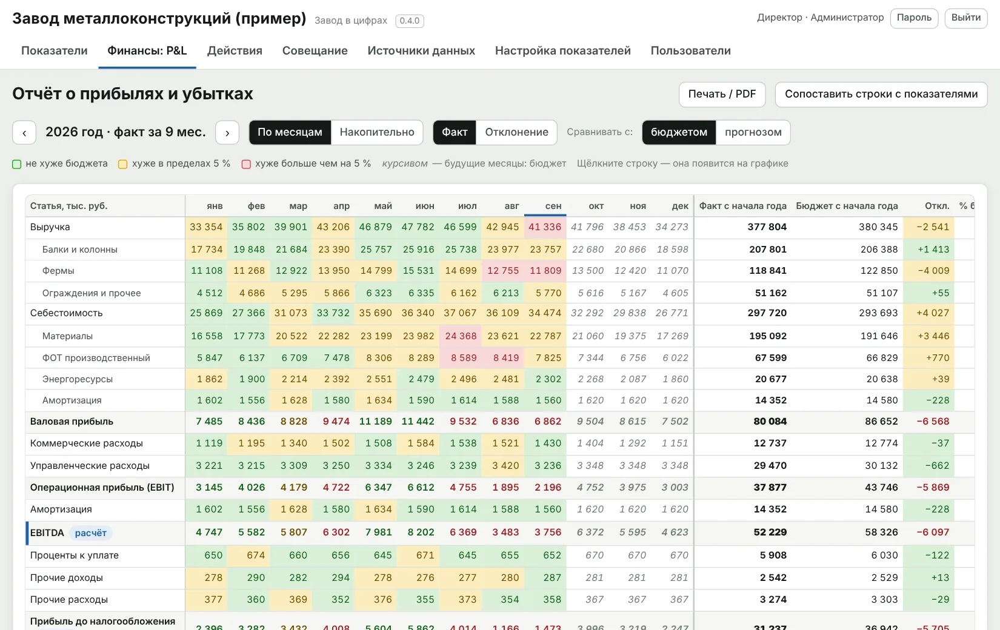
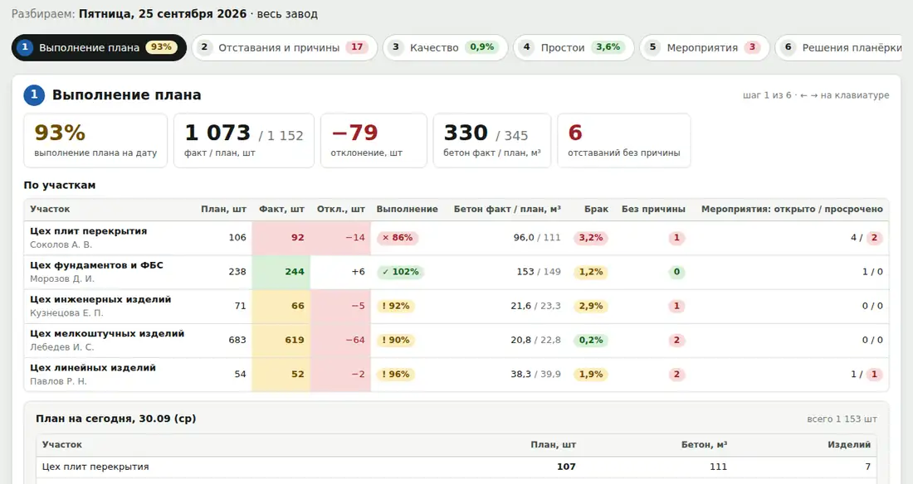

Выстраиваю системное управление предприятием по цифрам и сам делаю для этого инструменты: от регламентов до ИИ-ассистента
Чем занимаюсь сейчас и что уже сделано: три программы для управления заводом, ИИ-ассистент аналитика, система из 116 документов и аудит завода на 152 вопроса.
17 лет в сфере производственных компаний: автокомпоненты, бытовая техника, ЖБИ. Программы ниже выросли из собственной управленческой практики: в них то, чего не хватало мне самому и что планирую использовать в будущем. Придумал, спроектировал и довёл до работающего состояния сам. Код закрыт, живую работу показываю на встрече.
Что сделано
1«Завод в цифрах»
Весь завод на одном экране из тех файлов Excel, что уже ведутся. Каждое отклонение доводится до причины, действия с ответственным и сроком и результата через месяц.

- Производство и качествовыпуск, брак, простои — каждый день
- Причины и действияТОП-3, статус, срок, эффект
- Финансы: P&Lфакт к бюджету, EBITDA, чистая прибыль
- Персоналчисленность, текучесть, выработка, ФОТ
- Любая отрасль123 готовых показателя по 15 блокам
- ИИ-ассистентотчёт для директора по выбранным показателям
ИИ-ассистент: отчёт для совещания за минуту
Директор выбирает период и показатели, ассистент пишет текст: что вне цели, почему и на что обратить внимание. Можно попросить своими словами: «оцени риски годового плана». Числа считает программа, модель только описывает готовую таблицу, решение остаётся за человеком.
Условные данные. Числа считает программа, текст пишет модель, решает человек.
Выдумка видна сразу
Число в тексте, которого нет в таблице программы, подсвечивается как возможная выдумка. Можно открыть запрос и увидеть, что именно ушло в модель.
Данные завода под контролем
Модель — локальная на компьютере предприятия или облачная, выбирает администратор. По умолчанию ассистент выключен, персональные данные в облако не уходят.
Проверяется тестами
Логика ассистента входит в 439 автотестов программы. Тексты отчётов правятся, последние 30 хранятся в архиве.
2«Бережливый завод»
Программа для ежедневных улучшений, где каждый экран — шаг одного цикла: цель → отклонение → причина → действие → проверка результата → стандарт. Задача — чтобы производственная система работала каждый день, а не «для галочки».
Ежедневное управление
Показатели участков, план и факт по сменам. У отклонения — причина, действие, ответственный и срок; перенос срока только с причиной; эскалация участок → цех → завод.
Предложения от людей
«Что мешает работать?» — одной фразой и с фото. Ответ в установленный срок, отказ только с объяснением, внедрённое засчитывается по «было / стало» и получает «спасибо».
Решение проблем
«5 почему» и лист A3 с диаграммой Исикавы, меры с ответственными. Проблема закрывается только по подтверждённому результату.
Картирование потока
Такт, время протекания, доля ценности, узкое место, хронометраж. Карты «сейчас» и «цель», замеры «было → стало → цель».
Обучение
Курсы для руководителей и специалистов (потери, совещание у доски за 15 минут, разбор проблем, карта потока) и для рабочих (поиск потерь, 5S, как подать предложение). Урок крупно на экран для пятиминутки.
Реакция руководителей
Директор видит не «сколько подали рабочие», а как руководители отвечают: идеи без ответа, дни ожидания, неразобранные отклонения.
3«План-факт»
Контроль выполнения плана каждый день: план по дням, факт по сменам с причинами, планёрка (ежедневное совещание по плану) по шагам с протоколом, заказы и готовность к отгрузке.

- План и фактпо сменам, с телефона
- Планёркапо шагам, протокол формируется сам
- Заказыготовность к отгрузке
- МодулиОТК, простои по QR, время операций
Все три программы ставятся на компьютер предприятия и работают в локальной сети, без облака и IT-проекта.
Документы и аудит
То, что делает завод управляемым ещё до программ: регламенты, KPI, отчётность, совещания и диагностика действующего предприятия.
116 документов и 27 Excel-инструментов
Регламенты, KPI, отчётность, технологические карты и инструкции ОТК в двух отраслевых версиях: сборка бытовой техники и завод ЖБИ. Выпускаются пакетами под этапы развития.
Аудит на 152 вопроса и план на 100 дней
Оценка зрелости по 12 областям с доказательствами, карта разрывов, система совещаний, узкие места, план развития на 12 месяцев.
Как я строю системы
Принципы управления, устройство программы «Завод в цифрах», инженерные практики и порядок выпуска версий.
Мощности, простои, время операций
Небольшие рабочие инструменты, которые собирал под конкретные вопросы цеха. Часть выросла в модули «План-факта».
Модель загрузки мощностей
Расчёт по уровням полуфабрикатов, календарь оборудования, сверхурочные ближе к сроку. Всё на формулах в Excel, файл собирается программой.
Простои по QR-кодам
Отметка простоя со смартфона у станка, автозакрытие, процент простоя от планового времени, Парето причин. Работает без интернета.
Время операций
Хронометраж и Ямадзуми, такт, мероприятия с оценкой эффекта.
Как росли системы: от Excel до программы
Каждый следующий инструмент вырастал из ограничений предыдущего. Программы выходят небольшими версиями: в каждой одна законченная возможность, автотесты и документация.
Показать путь и версии программ
Положения, KPI, отчётность, планирование. Из этой практики вырос комплект на 116 документов и 27 расчётных инструментов.
MRP по уровням полуфабрикатов, календарь оборудования, сверхурочные ближе к сроку. Всё на формулах, файл собирается программой.
Веб-приложение на Google Таблицах: отметка простоя с телефона, автозакрытие, % простоя от планового времени, цели с историей.
Свой сервер: загрузка Excel без задвоения, роли и вход по паролю, журнал аудита, режим «Годы». Из него вырос «Завод в цифрах».
Планирование, факт, планёрка, качество, простои, время операций, заказы и готовность к отгрузке, план по ресурсам. Установщики для Windows и Mac, обновления.
Читает файлы Excel завода как есть и превращает их в показатели с целью и трендом. По показателю вне цели — три главные причины, действия с ответственным, сроком и статусом, оценка эффекта, совещание и протокол, P&L. Программа сверяет загруженное с итогами файлов и не складывает разное молча.
По выбранным показателям и периоду пишет текст отчёта для совещания, а числа считает программа. Подсветка чисел вне таблицы, просмотр запроса, локальная или облачная модель на выбор администратора, архив отчётов. Следующий шаг: ИИ-помощник в «План-факте».
Ежедневное управление по участкам, предложения от людей, решение проблем (5 почему, A3), картирование потока, обучение руководителей и рабочих. Пять версий за первые дни, дальше — проверка на Windows, стандарты и 5S.
«Завод в цифрах»: от 0.4 до 0.7.0, автотестов с 137 до 439; с 0.5.6 — ИИ-ассистент аналитика, в 0.6.0 — журналы событий и разрезы, в 0.7.0 — гибкая аналитика: таблица вместо графика, выгрузка в Excel, виды графиков и спидометр. Дальше: модуль «Отгрузки» и себестоимость в «План-факте».
Каждое отклонение — действие
Недовыполнение без причины не закрывается. У причины есть мероприятие, ответственный и срок, статус виден на совещании.
Числу можно верить
Программа сверяет загруженное с итогом файла и прямо пишет, когда данных не хватает. ИИ не считает: он описывает то, что посчитано и проверено.
Сначала процесс, потом инструмент
Инструмент появляется там, где уже понятен процесс и владелец. Поэтому им пользуются каждый день, а не только на проверке.
Закрыто — значит подтверждено
Мероприятие или проблема закрываются по результату повторного замера, а не по отметке «сделано». Помогло — становится стандартом.
Люди — источник улучшений
На каждое предложение — ответ в срок, отказ — с объяснением. Разбираем причину, а не ищем виноватого.
История не правится задним числом
Цели и допуски меняются с датой начала действия, каждое изменение — с причиной и в журнале. Поэтому прошлые цифры не «плывут».
Программы выросли из работы на заводах
В них то, чего не хватало мне самому как руководителю: единые цифры, причины отклонений и совещание, которое заканчивается решением со сроком.
Директор департамента производства и логистики, завод водонагревателей: производство, склад, снабжение, планирование и продажи.
Заместитель директора: качество и сервисная поддержка со стороны завода-производителя водонагревателей.
Директор по производству / CTO комбината железобетонных изделий: 5 цехов, 8 участков, 250+ сотрудников.
От производственного отдела до директора по качеству; автокомпоненты для Ford, Nissan, Toyota, Hyundai, Renault, Volkswagen, АвтоВАЗ.